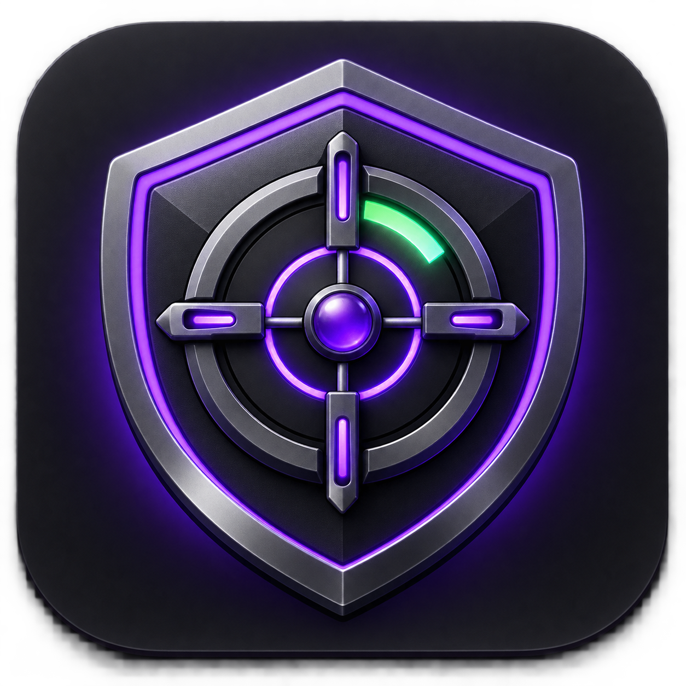

CRASH AUDITOR
Captura de sessão
Sincronização
Conecte seu painel
Configure o destino onde as sessões capturadas serão enviadas.
Monitoramento ativoNenhuma sessão identificadaAbra o ambiente de teste ou o jogo para capturar uma sessão.
0